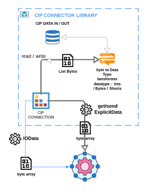

Class CIPConnection
java.lang.Object
com.cohorte.ethernetip.cipconnector.CIPConnection
- Direct Known Subclasses:
CIPConnectionImplicit
public class CIPConnection
extends java.lang.Object
He CIPConnection class provide all explicit messaging services defined by ODVA.
This class has some parameters that differ from one device to another link producerInstanceID and consumerInstanceID.
the other parameters are defined by default within the class, we tried to set the most common used configuration for devices
it's recommended to use connection path provided in your EDS since our library can map out the connection path configuration automatically
if the no connection path was set, then you should configure the connection parameters manually using the class getters and setters

- Since:
- 18/06/2020
- Version:
- 1.0
- Author:
- MOHAMMED ELASRIs
-
Field Summary
Fields Modifier and Type Field Description protected intassemblyObjectClassIDassemblyObjectClassID is a common connection parameter, it should be changed when it's different for your targetprivate booleanauto_O_T_sizeauto_O_T_size , this parameter specifies if the size of the data from originator to target should be detected automatically or provided manually by the userprivate booleanauto_T_O_sizeauto_T_O_size , this parameter specifies if the size of the data from target to originator should be detected automatically or provided manually by the userprotected intconfigurationAssemblyAttributeIDconfigurationAssemblyAttributeID is a common connection parameter, it should be changed when it's different for your targetprotected intconfigurationAssemblyClassIDconfigurationAssemblyClassID is a common connection parameter, it should be changed when it's different for your targetprotected intconfigurationAssemblyInstanceIDconfigurationAssemblyInstanceID is not always a common connection parameter, it should be changed when it's different for your targetstatic intconnectionCounterprivate java.lang.StringconnectionPathConnection path is very import to establish a cip connection, any error on that connection path will lead obstruct the connection process when connectionPath is used, we no longer need to configure the connection parameters using the getters and setters , it will be done automaticallyprotected intconsumerAttributeIDO to T , target to originator Attribute idprotected intconsumerClassIDO to T , target to originator class idprotected intconsumerInstanceIDO to T , target to originator Instance idprotected de.re.eeip.EEIPClienteipClientthe ethernet/ip libraryprivate intidprivate java.lang.StringipAddressaddress ip for the targetprivate booleanisConnectedprovide information about the connection status and whether it's already connected or notprivate java.lang.Stringnamegive the connection symbolic name to differentiate it from other connectionsprivate intportport for the targetprotected intproducerAttributeIDT to O , target to originator Attribute IDprotected intproducerClassIDT to O , target to originator class idprotected intproducerInstanceIDT -to O , target to originator Instance ID -
Constructor Summary
Constructors Constructor Description CIPConnection()The default constructor of CIPConnection class, notice that you should use setters to configure the connection parameters after using using this contructorCIPConnection(java.lang.String ipAddress)Construct a cip connection using only ipAddress, all other connections properties will be set by default, notice you should set consumerInstanceID, int producerInstanceIDCIPConnection(java.lang.String ipAddress, int consumerInstanceID, int producerInstanceID)CIPConnection(java.lang.String ipAddress, java.lang.String connectionPath)Recommended constructor, this is the ideal constructor to use for cip connection, it's fetch connection parameters from cip path automatically, a valid cip connection path is required, otherwise, cip path will not be accepted @see setConnectionPath(String connectionPath) -
Method Summary
Modifier and Type Method Description voidcipRegisterSession()establish a session between originator/ target , and vise-verca this method should be called after all cip properties are configured ,otherwise, the method produces IOException; When this method is called properly, it will establish a session for the cipConnection respecting the connection model detailed on cip documentationvoidcipUnRegisterSession()unregister a session that was established earlierjava.lang.StringgetConnectionPath()intgetConsumerAttributeID()intgetConsumerClassID()intgetConsumerInstanceID()java.util.List<java.lang.Byte>getData()This method should called only when the a cipConnection is established .de.re.eeip.EEIPClientgetEipClient()GETTERS AND SETTERSjava.util.List<java.lang.Byte>getExplicitUsingParameters(int classID, int instanceID, int attributeID)This method should called only when a cipConnection is established .intgetId()java.lang.StringgetIpAddress()java.lang.StringgetName()intgetPort()intgetProducerAttributeID()intgetProducerClassID()intgetProducerInstanceID()booleanisAuto_O_T_size()booleanisAuto_T_O_size()booleanisConnected()voidisConnected(boolean isConnected)voidsetAuto_O_T_size(boolean auto_O_T_size)voidsetAuto_T_O_size(boolean auto_T_O_size)voidsetConnected(boolean connected)voidsetConnectionPath(java.lang.String connectionPath)this is a special setter for the connection path the method take a cip path parse it and validate it, if everything goes well it will map the path parameters to our cip connection using this method , providing a valid path , it will configure all the explicit connection properties, thus so will avoid doing that manuallyvoidsetConsumerAttributeID(int consumerAttributeID)voidsetConsumerClassID(int consumerClassID)voidsetConsumerInstanceID(int consumerInstanceID)voidsetData(java.util.List<java.lang.Byte> input)This method should called only when the a cipConnection is established .voidsetEipClient(de.re.eeip.EEIPClient eipClient)voidsetExplicitUsingParameters(int classID, int instanceID, int attributeID, java.util.List<java.lang.Byte> data)This method should called only when the a cipConnection is established .voidsetId(int id)voidsetIpAddress(java.lang.String ipAddress)voidsetName(java.lang.String name)voidsetPort(int port)voidsetProducerAttributeID(int producerAttributeID)voidsetProducerClassID(int producerClassID)voidsetProducerInstanceID(int producerInstanceID)
-
Field Details
-
connectionCounter
public static int connectionCounter -
id
private int id -
eipClient
protected de.re.eeip.EEIPClient eipClientthe ethernet/ip library- See Also:
EEIPClient
-
isConnected
private boolean isConnectedprovide information about the connection status and whether it's already connected or not- See Also:
EEIPClient
-
name
private java.lang.String namegive the connection symbolic name to differentiate it from other connections -
ipAddress
private java.lang.String ipAddressaddress ip for the target -
port
private int portport for the target -
configurationAssemblyClassID
protected int configurationAssemblyClassIDconfigurationAssemblyClassID is a common connection parameter, it should be changed when it's different for your target -
configurationAssemblyInstanceID
protected int configurationAssemblyInstanceIDconfigurationAssemblyInstanceID is not always a common connection parameter, it should be changed when it's different for your target -
configurationAssemblyAttributeID
protected int configurationAssemblyAttributeIDconfigurationAssemblyAttributeID is a common connection parameter, it should be changed when it's different for your target -
assemblyObjectClassID
protected int assemblyObjectClassIDassemblyObjectClassID is a common connection parameter, it should be changed when it's different for your target -
producerClassID
protected int producerClassIDT to O , target to originator class id -
producerAttributeID
protected int producerAttributeIDT to O , target to originator Attribute ID -
producerInstanceID
protected int producerInstanceIDT -to O , target to originator Instance ID -
consumerClassID
protected int consumerClassIDO to T , target to originator class id -
consumerInstanceID
protected int consumerInstanceIDO to T , target to originator Instance id -
consumerAttributeID
protected int consumerAttributeIDO to T , target to originator Attribute id -
connectionPath
private java.lang.String connectionPathConnection path is very import to establish a cip connection, any error on that connection path will lead obstruct the connection process when connectionPath is used, we no longer need to configure the connection parameters using the getters and setters , it will be done automatically -
auto_O_T_size
private boolean auto_O_T_sizeauto_O_T_size , this parameter specifies if the size of the data from originator to target should be detected automatically or provided manually by the user -
auto_T_O_size
private boolean auto_T_O_sizeauto_T_O_size , this parameter specifies if the size of the data from target to originator should be detected automatically or provided manually by the user
-
-
Constructor Details
-
CIPConnection
public CIPConnection()The default constructor of CIPConnection class, notice that you should use setters to configure the connection parameters after using using this contructor -
CIPConnection
public CIPConnection(java.lang.String ipAddress)Construct a cip connection using only ipAddress, all other connections properties will be set by default, notice you should set consumerInstanceID, int producerInstanceID -
CIPConnection
public CIPConnection(java.lang.String ipAddress, int consumerInstanceID, int producerInstanceID) -
CIPConnection
public CIPConnection(java.lang.String ipAddress, java.lang.String connectionPath)Recommended constructor, this is the ideal constructor to use for cip connection, it's fetch connection parameters from cip path automatically, a valid cip connection path is required, otherwise, cip path will not be accepted @see setConnectionPath(String connectionPath)
-
-
Method Details
-
getEipClient
public de.re.eeip.EEIPClient getEipClient()GETTERS AND SETTERS -
setEipClient
public void setEipClient(de.re.eeip.EEIPClient eipClient) -
isConnected
public boolean isConnected() -
setConnected
public void setConnected(boolean connected) -
getId
public int getId() -
setId
public void setId(int id) -
isConnected
public void isConnected(boolean isConnected) -
getName
public java.lang.String getName() -
setName
public void setName(java.lang.String name) -
getIpAddress
public java.lang.String getIpAddress() -
setIpAddress
public void setIpAddress(java.lang.String ipAddress) -
setProducerClassID
public void setProducerClassID(int producerClassID) -
setProducerAttributeID
public void setProducerAttributeID(int producerAttributeID) -
setConsumerClassID
public void setConsumerClassID(int consumerClassID) -
getConsumerInstanceID
public int getConsumerInstanceID() -
setConsumerInstanceID
public void setConsumerInstanceID(int consumerInstanceID) -
setConsumerAttributeID
public void setConsumerAttributeID(int consumerAttributeID) -
setProducerInstanceID
public void setProducerInstanceID(int producerInstanceID) -
getProducerClassID
public int getProducerClassID() -
getProducerAttributeID
public int getProducerAttributeID() -
getProducerInstanceID
public int getProducerInstanceID() -
getConsumerClassID
public int getConsumerClassID() -
getConsumerAttributeID
public int getConsumerAttributeID() -
getConnectionPath
public java.lang.String getConnectionPath() -
setConnectionPath
public void setConnectionPath(java.lang.String connectionPath)this is a special setter for the connection path the method take a cip path parse it and validate it, if everything goes well it will map the path parameters to our cip connection using this method , providing a valid path , it will configure all the explicit connection properties, thus so will avoid doing that manually- Parameters:
connectionPath- a valid string of cip connection path
-
getPort
public int getPort() -
setPort
public void setPort(int port) -
isAuto_O_T_size
public boolean isAuto_O_T_size() -
setAuto_O_T_size
public void setAuto_O_T_size(boolean auto_O_T_size) -
isAuto_T_O_size
public boolean isAuto_T_O_size() -
setAuto_T_O_size
public void setAuto_T_O_size(boolean auto_T_O_size) -
cipRegisterSession
public void cipRegisterSession() throws java.io.IOExceptionestablish a session between originator/ target , and vise-verca this method should be called after all cip properties are configured ,otherwise, the method produces IOException; When this method is called properly, it will establish a session for the cipConnection respecting the connection model detailed on cip documentation- Throws:
java.io.IOException
-
cipUnRegisterSession
public void cipUnRegisterSession() throws java.io.IOExceptionunregister a session that was established earlier- Throws:
java.io.IOException
-
getExplicitUsingParameters
public java.util.List<java.lang.Byte> getExplicitUsingParameters(int classID, int instanceID, int attributeID) throws java.io.IOException, de.re.eeip.cip.exception.CIPExceptionThis method should called only when a cipConnection is established . This method send an explicit get, te get the data of specific object instance attribute. It uses the @see EEIPClient get attribute signle to get the data, the pure data comes in a format of byte array , but getData method transform the received data to Byte list- Parameters:
classID- , ID of the target object classinstanceID- , ID of the instance of target objectattributeID- , ID of the attribute of target object- Returns:
- List, list of Bytes representing the data received from the target
- Throws:
java.io.IOExceptionde.re.eeip.cip.exception.CIPException
-
setExplicitUsingParameters
public void setExplicitUsingParameters(int classID, int instanceID, int attributeID, java.util.List<java.lang.Byte> data) throws java.io.IOException, de.re.eeip.cip.exception.CIPExceptionThis method should called only when the a cipConnection is established . This method send an explicit message to bring list data of the target. It uses the @see EEIPClient set attribute single to send the data, the pure data passed in list of Byte objects , but getData method transform the passed data to Byte array before being as a buffer- Parameters:
classID- , list of Bytes representing the data wil be sent from the originator to targetinstanceID- , list of Bytes representing the data wil be sent from the originator to targetattributeID- , list of Bytes representing the data wil be sent from the originator to targetdata- , list of Bytes representing the data wil be sent from the originator to target- Throws:
java.io.IOExceptionde.re.eeip.cip.exception.CIPException
-
getData
public java.util.List<java.lang.Byte> getData()This method should called only when the a cipConnection is established . This method send an explicit get to bring list data of the target. It uses the @see EEIPClient get attribute signle to get the data, the pure data comes in a format of byte array , but getData method transform the received data to Byte list- Returns:
- List, list of Bytes representing the data received from the target
-
setData
public void setData(java.util.List<java.lang.Byte> input)This method should called only when the a cipConnection is established . This method send an explicit message to set target data with input. It uses the @see EEIPClient set attribute single to send the data, the pure data passed in list of Byte objects , but getData method transform the passed data to Byte array before being as a buffer- Parameters:
input- , list of Bytes representing the data wil be sent from the originator to target
-